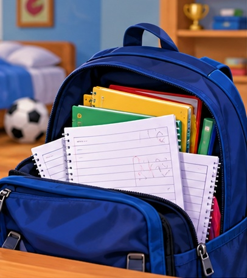
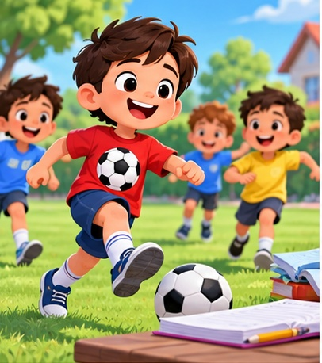
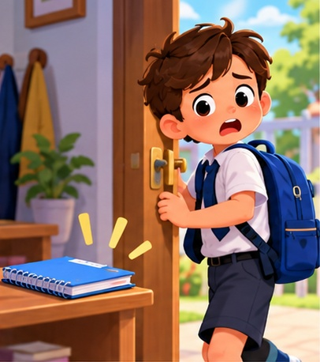

إهمال الواجبات المدرسية

الواجب المدرسي يساعدنا على تثبيت الدرس، ومراجعته، والاستعداد للحصة القادمة بثقة.
سؤال للنقاش: لماذا يُعدّ الواجب المدرسي جزءًا مهمًا من تعلمنا؟
ما المقصود بإهمال الواجب؟
إهمال الواجب يعني تأجيله أو نسيانه أو عدم إكماله بصورة منتظمة، حتى يصبح عادة متكررة.
سؤال للنقاش: كيف أعرف أنني بدأت أهمل واجباتي؟
اللعب قبل الواجب طوال الوقت

اللعب جميل، لكن حين يأخذ كل الوقت قبل أداء الواجب فإن الدرس يبقى ناقصًا، ويزداد التأجيل يومًا بعد يوم.
سؤال للنقاش: ما الوقت المناسب للعب وما الوقت المناسب للواجب؟
الأجهزة تسرق الوقت
الهاتف أو الجهاز اللوحي أو التلفاز قد يجعل التلميذ ينسى واجبه إذا لم ينظم وقته جيدًا.
سؤال للنقاش: كيف أحمي وقتي من المشتتات؟
نسيان الدفتر أو الواجب

عندما لا نراجع حقيبتنا ولا نرتب أدواتنا قد ننسى الدفتر أو الكتاب أو الواجب المطلوب.
سؤال للنقاش: ماذا أفعل كل يوم حتى لا أنسى واجبي؟
الأعذار لا تحل المشكلة
تكرار الأعذار أمام المعلم لا ينجز الواجب، بل يجعل المشكلة أكبر ويضعف الثقة بالنفس.
سؤال للنقاش: ما الفرق بين الاعتذار الصادق وتحمل المسؤولية؟
إهمال الواجب يضعف الفهم
عندما لا نحل الواجب نفقد فرصة التدريب، فنشعر أن الدرس صعب ولا نفهمه جيدًا في الصف.
سؤال للنقاش: كيف يساعدني الواجب على فهم الدرس أكثر؟
ثم يبدأ القلق والانزعاج
التأجيل المستمر يجعل التلميذ قلقًا وخائفًا من الحصة أو من سؤال المعلم أو من تراكم المهام.
سؤال للنقاش: ما الشعور الذي قد يصاحب التلميذ عندما يهمل واجباته؟
لماذا يهمل بعض التلاميذ واجباتهم؟
من الأسباب: كثرة الانشغال باللعب، سوء تنظيم الوقت، السهر، أو عدم طلب المساعدة عند الصعوبة.
سؤال للنقاش: أي سبب من هذه الأسباب هو الأكثر شيوعًا بين التلاميذ؟
كيف أبدأ من جديد؟
أبدأ بقرار بسيط: أعود اليوم إلى واجبي، وأحل ما أستطيع، ثم أكمل الباقي بهدوء وانتظام.
سؤال للنقاش: ما أول خطوة عملية يمكن أن أقوم بها هذا اليوم؟
أخصص وقتًا ثابتًا للواجب
اختيار وقت يومي ثابت بعد الراحة والطعام يساعدني على تكوين عادة جميلة ومنظمة.
سؤال للنقاش: ما أفضل وقت مناسب لك لأداء الواجب؟
أطلب المساعدة عند الحاجة
إذا وجدت سؤالًا صعبًا أسأل المعلم أو أحد والديّ أو زميلًا مجتهدًا بدل ترك الواجب كله.
سؤال للنقاش: ممن يمكن أن أطلب المساعدة عندما لا أفهم الواجب؟
أرتب حقيبتي ودفاتري
ترتيب الحقيبة، وتجهيز الأدوات، ومراجعة الواجبات قبل النوم يقلل النسيان ويزيد الالتزام.
سؤال للنقاش: ما الأشياء التي يجب أن أراجعها في حقيبتي قبل أن أنام؟
الواجب عادة تقود إلى النجاح
التلميذ الذي يهتم بواجباته يشعر بالطمأنينة، ويدخل الصف مستعدًا، وتتحسن نتائجه مع الوقت.
سؤال للنقاش: ما الفائدة التي أحصل عليها عندما ألتزم بواجباتي؟
عهدي اليوم
من اليوم ألتزم بواجباتي، وأنظم وقتي، وأبتعد عن التأجيل، لأن نجاحي يبدأ من مسؤولياتي الصغيرة.
سؤال للنقاش: ما الجملة التي تعد بها نفسك من اليوم حول واجباتك المدرسية؟
⛶
السابق
1 / 15
التالي